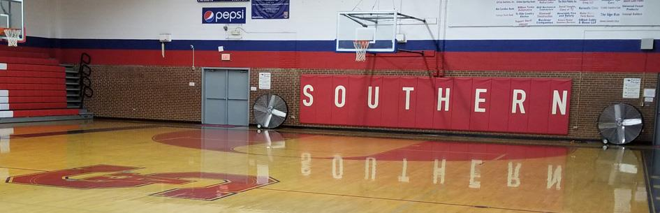

Introduction
I graduated from Southern Alamance High School in 2016 and started at North Carolina A&T the same year. My major was undecided my first year then I switched to Computer Science. My skill set includes; coding in Java, C++. I am also Cisco and Microsoft Office certified.
